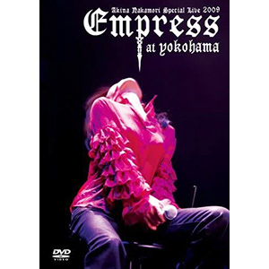

现场视频：第13张
发行年份：2010年
发行日期：8月18日
| 歌名 | 作词 | 作曲 |
|---|---|---|
| 私は泣いています | りりィ | りりィ |
| 学生街の喫茶店 | 山上路夫 | すぎやまこういち |
| 旅の宿 | 岡本おさみ | 吉田拓郎 |
| 心もよう | 井上陽水 | 井上陽水 |
| 無縁坂 | さだまさし | さだまさし |
| シクラメンのかほり | 小椋佳 | 小椋佳 |
| ダンスはうまく踊れない | 井上陽水 | 井上陽水 |
| Woman | 松本隆 | 呉田軽穂 |
| ベルベットイースター | 荒井由実 | 荒井由実 |
| 悪女 | 中島みゆき | 中島みゆき |
| 22才の別れ | 伊勢正三 | 伊勢正三 |
| 雨の物語 | 伊勢正三 | 伊勢正三 |
| I LOVE YOU | 尾崎豊 | 尾崎豊 |
| 恋 | 松山千春 | 松山千春 |
| I hope so | 中森明菜 | 井上慎二郎・武部聡志 |
| 特典映像 |
首发规格：初回盤: UMBK-9227，通常盤: UMBK-1153
唱片公司：Universal Sigma
排行榜：Oricon公信榜DVD音楽周榜第13位
再发行：
2011年9月21日 - DVD: UMBK-9239
2012年9月26日 - DVD: UMBK-9239
2013年6月19日 - DVD: UMBK-9239
2016年5月4日 - DVD: UPBH-1404~10
2017年3月8日 - DVD: UPBY-9040
2020年10月7日 - DVD: UPBY-9115